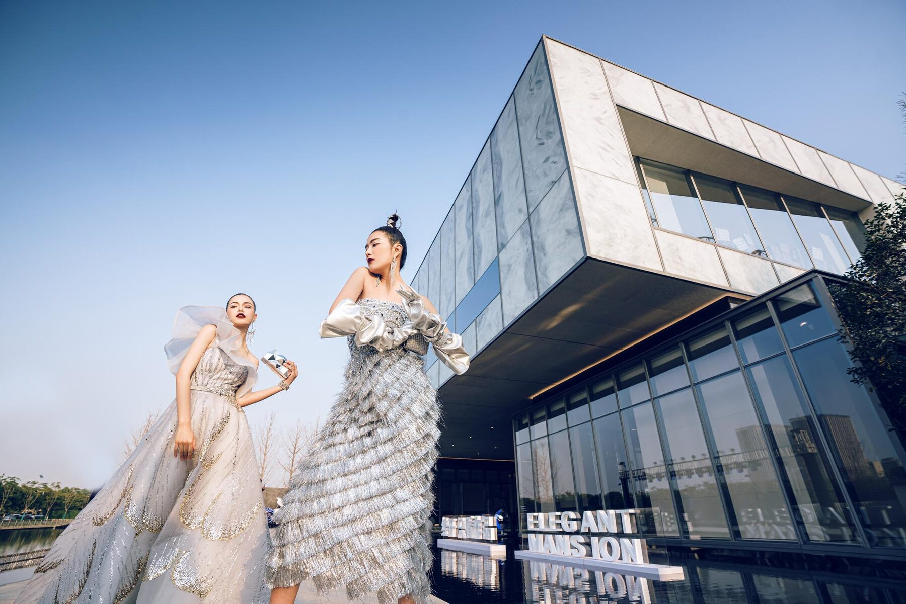
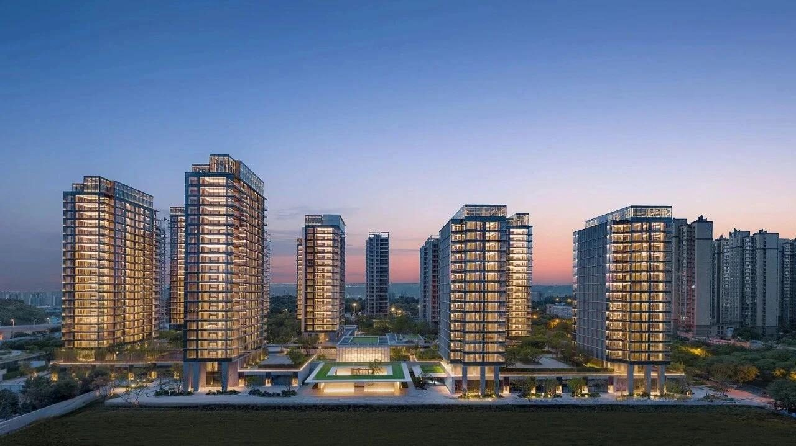

Translating translucent stone into buildable exterior envelopes
From the order of the elevation to the veining up close, EYESHOT connects exterior facade material expression, panelisation, detailing and site implementation into one engineering language shared by architects, facade consultants and owners.
Patented hot-fusion breaks the translucency barrier of stone; 3mm ultra-thin slicing with enhanced UV blocking; five-layer Glass|PVB|Stone|PVB|Glass build-up.
3,000+ stone textures digitally mapped and pre-panelised in the factory — 100% faithful to design intent, 40% shorter programme, zero on-site cutting waste.
Magnetic quick-release light tracks inside the titanium frame; servicing through concealed side doors, no scaffolding, 5-minute fixes, 65% lower 10-year maintenance cost.
Typical curtain-wall build-up, exposed-frame and hidden-frame details, with full panelisation and interface engineering.

Key case: The Reserve, Singapore
Turn rare stone veining into an architectural shell that works from distant recognition to close-up texture.

Key case: CR Land Yuanqi Guanchao, Hangzhou
Organize light, material and movement so the facade becomes the first spatial narrative of arrival.

Key case: CR Land Gaoxin Tianxu, Chengdu
Use a five-metre jade wall to establish a resort-grade residential frontage.

Key case: Yangtze Riverfront Center, Wuhan
Coordinate open community, riverfront movement and public facade as one civic interface.
An agate fortress — rare stone facade, systematically engineered
View project →
Brand facades in natural Grand Antique marble (project application)
View project →
Suspended light — a floating jewel box in translucent marble glass
View project →
A 3km covered promenade turns homecoming into immersive art
View project →Send us your project stage, space type and intended application — we respond with samples, drawings and engineering advice.